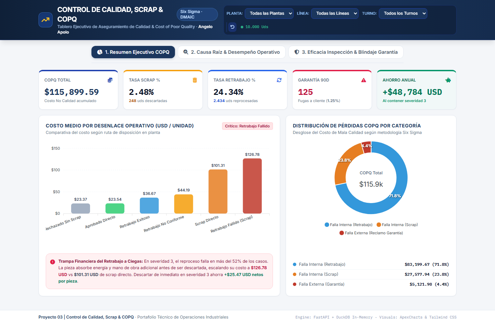
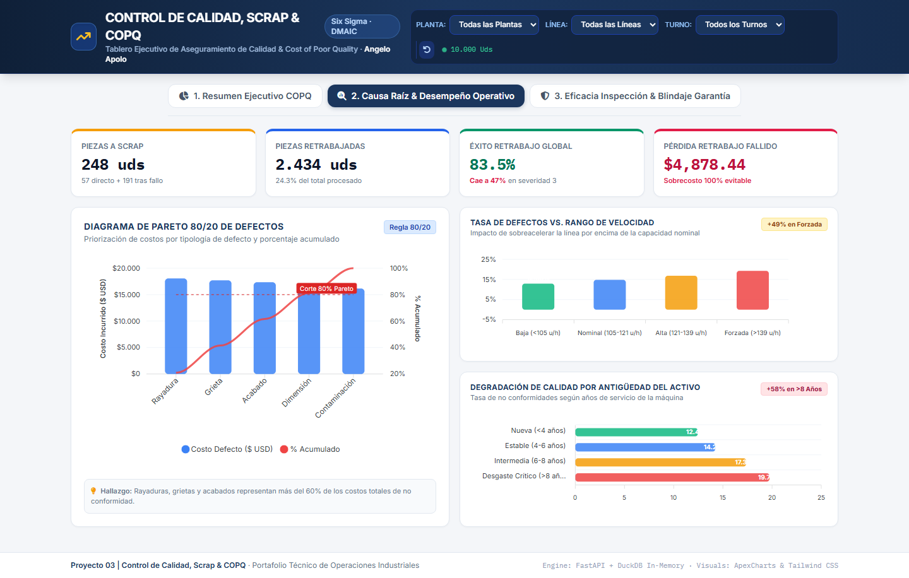
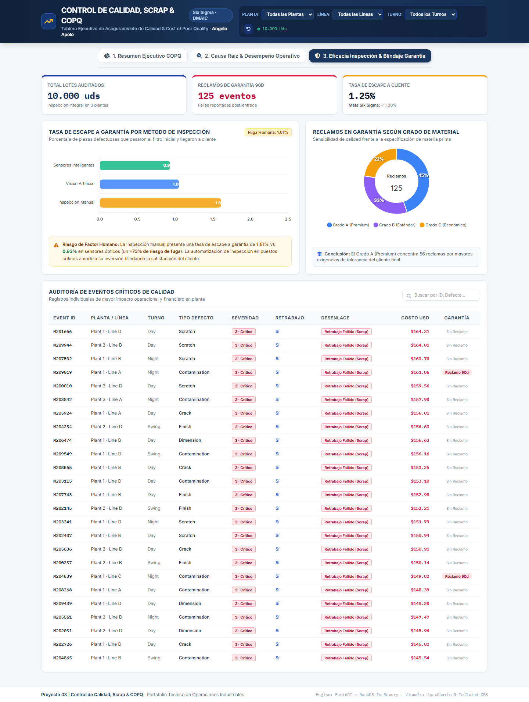

Este es un estudio de caso de práctica: los datos provienen de un dataset público de manufactura publicado en Kaggle (10,000 decisiones de inspección de calidad). Lo utilicé como un caso realista para aplicar de principio a fin mi forma de trabajar: entender el problema de negocio, analizar los datos, construir un tablero de decisión y entregar herramientas usables en piso de planta.
En resumen (para reclutadores y perfiles de gestión)
Cuando un inspector detecta una pieza defectuosa, decide "a ojo" si repararla o desecharla. Ese criterio informal esconde una trampa: reparar piezas que de todas formas van a terminar en la basura, después de haber gastado tiempo, energía y materiales en el intento.
Analicé 10,000 decisiones reales de inspección con Python, cuantifiqué cuánto cuesta cada tipo de error y encontré los 3 factores que más elevan la tasa de fallas (velocidad de línea, antigüedad de la máquina y método de inspección). Todo lo llevé a un tablero ejecutivo interactivo.
Una regla simple de piso: cuándo autorizar reparación y cuándo desechar de inmediato. Aplicada a esta muestra, evita +$48,784 USD/año en pérdidas dobles y libera 78 horas de trabajo de planta, sin ninguna inversión en equipos.
Resumen Ejecutivo de Negocio
Sobre una base de 10,000 decisiones de inspección de calidad, medí el Costo de la Mala Calidad (COPQ): $115,899.59 USD acumulados entre piezas desechadas, reparaciones y reclamos de clientes. El hallazgo central es que 191 piezas fueron reparadas y aun así terminaron en la basura, pagando dos veces el mismo costo (mano de obra + energía + el material perdido). Diseñé una regla de decisión simple basada en la severidad del defecto, la volqué en un tablero ejecutivo interactivo y en un modelo de Power BI, y la respaldé con herramientas de piso: una guía visual de un vistazo (One-Point Lesson) y un plan formal de acción correctiva (CAPA / 8D).
1. ¿Cuánto cuesta realmente no hacerlo bien a la primera?
Antes de proponer cualquier cambio, necesitaba un número que un gerente pudiera defender frente a la dirección. Clasifiqué cada una de las 10,000 decisiones según su desenlace real (aprobada, reparada con éxito, reparada sin éxito, desechada) y calculé su costo promedio:
Piezas desechadas directamente y horas de reparación invertidas en piezas que igual se perdieron.
Reclamos de clientes dentro de los 90 días posteriores a la entrega: dañan la relación comercial además del bolsillo.
Qué tan bien (y a qué costo) detectamos el defecto antes de que llegue al cliente: inspección manual vs. sensores automáticos.
El resultado más contundente: reparar una pieza con defecto severo y que aun así termine desechada cuesta $126.78 USD, mientras que haberla desechado de inmediato hubiera costado $101.31 USD. Es decir, la planta paga $25.47 USD de más por pieza solo por no tener un criterio claro de cuándo NO vale la pena reparar.

2. ¿Por qué fallan las piezas? Encontrando la causa raíz
Un número de pérdida sin causa raíz no le sirve a nadie en piso de planta. Cruzando los datos de cada evento encontré 3 factores que disparan la tasa de defectos de forma consistente:
El desglose de defectos por tipo (rayaduras, grietas, acabado, dimensión, contaminación) también sigue una regla 80/20 clara: tres de los cinco tipos de defecto concentran más del 60% del costo total de no conformidad, lo que permite priorizar dónde intervenir primero en vez de atacar todo a la vez.

3. Blindando al cliente: inspección y reclamos de garantía
El peor escenario de calidad no es el scrap: es que un defecto se escape hasta el cliente. Medí qué porcentaje de piezas defectuosas termina en un reclamo de garantía a 90 días según el método de inspección usado, y confirmé el riesgo del factor humano:
- Sensores inteligentes: 0.93% de escape a cliente
- Visión artificial: 1.05% de escape a cliente
- Inspección manual: 1.61% de escape a cliente (+73% de riesgo)
También encontré que el material Grado A (Premium) concentra la mayor cantidad de reclamos, no porque sea de peor calidad, sino porque el cliente le exige tolerancias más estrictas — una señal útil para ajustar los criterios de inspección según el tipo de producto y no aplicar la misma vara a todos.

4. Entregables Listos para Usar en Piso de Planta
Una hoja de un vistazo para el puesto de inspección: según la severidad del defecto, indica si conviene reparar, retener para evaluación o desechar de inmediato. Pensada para decidir en segundos, sin depender del criterio de cada turno.
Protocolo formal de 8 disciplinas para atacar la causa raíz (velocidad de línea, mantenimiento de máquinas viejas, estandarización de inspección) y no solo tratar el síntoma.
Modelo de datos y medidas DAX listos para que un gerente de calidad monitoree el COPQ por planta, línea y turno sin depender de reportes manuales en Excel.
Resumen de una sola página con el problema, la causa raíz, la solución propuesta y el impacto financiero — el formato que se presenta a dirección.
5. Dashboard en Vivo & Repositorio
Desarrollado en Python (FastAPI) y DuckDB In-Memory, con filtros por planta, línea y turno, y 3 vistas ejecutivas: resumen COPQ, causa raíz operativa, e inspección y garantía.
Matriz de decisión en Excel, guía visual de piso, protocolo CAPA/8D y Reporte A3, listos para imprimir y usar.